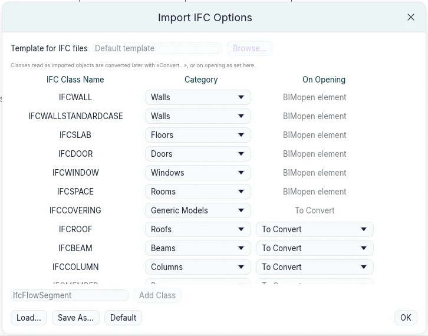
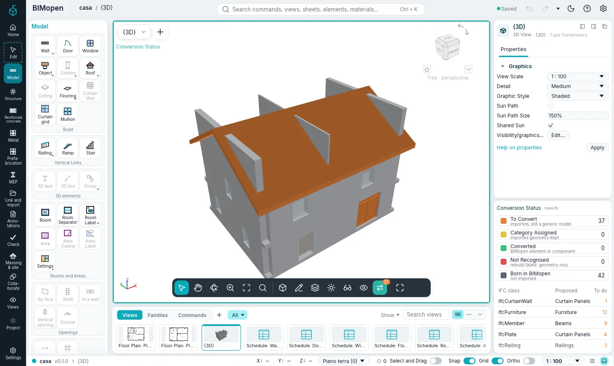
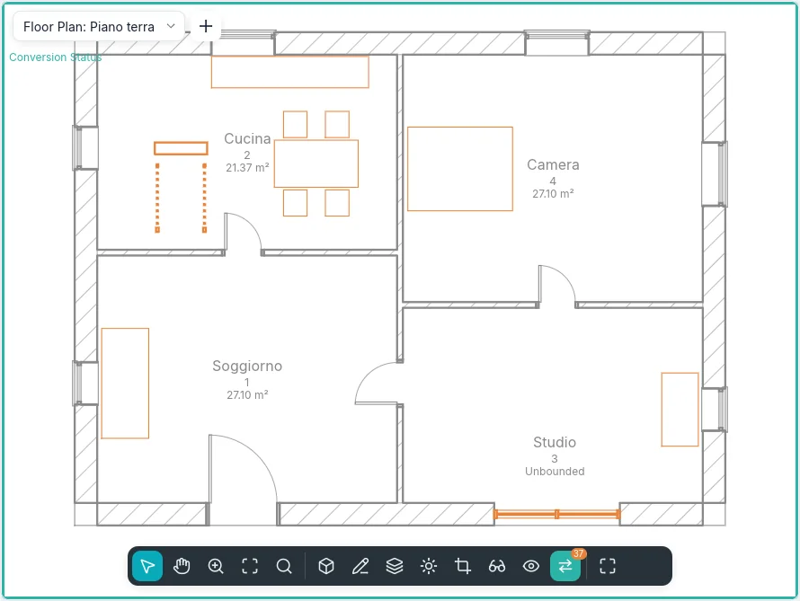
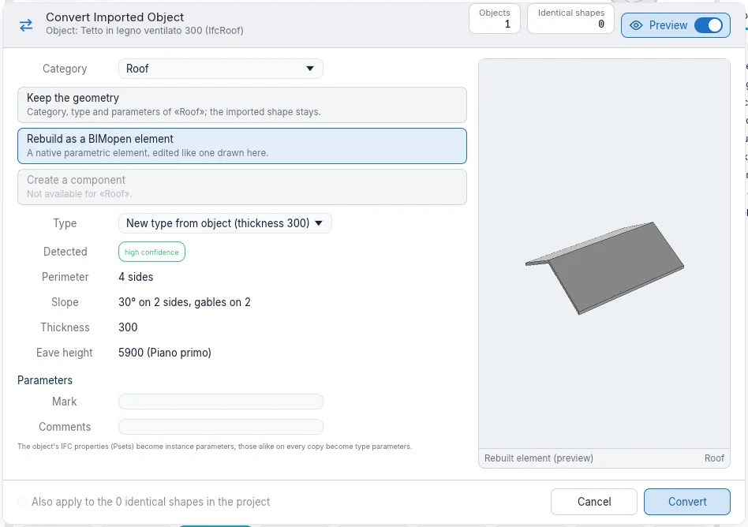
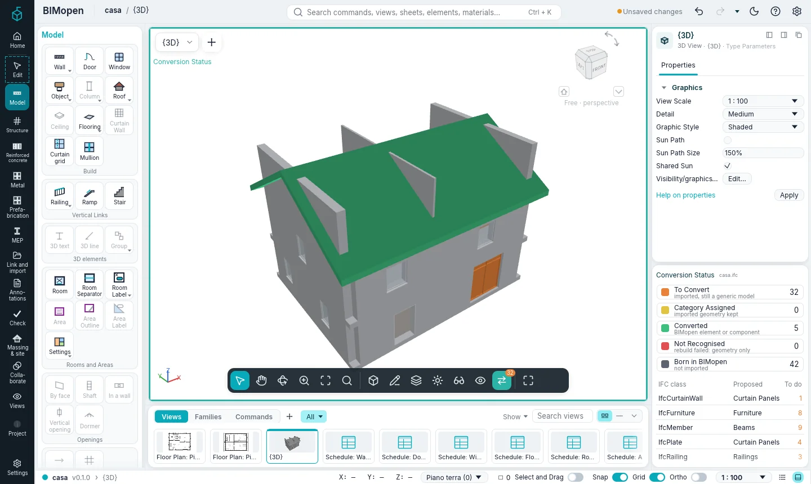
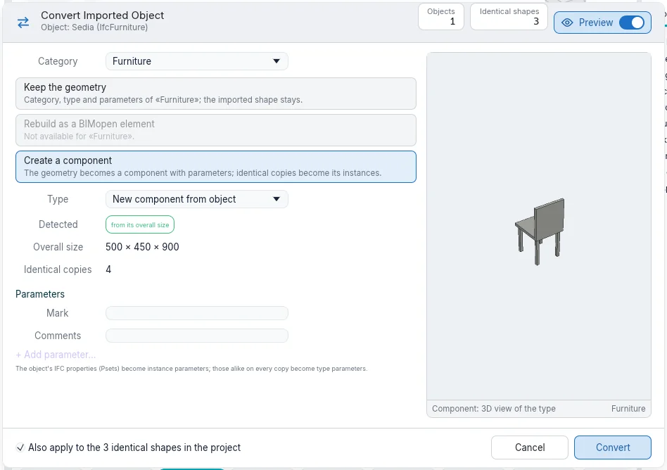
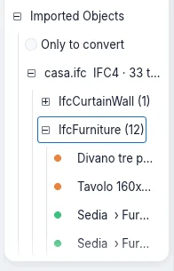
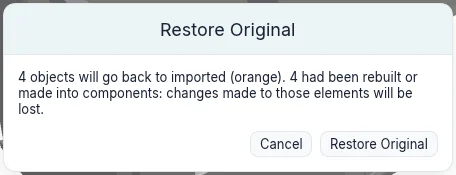

Importing and converting
A model made with other software arrives as an IFC file. BIMopen reads its walls, floors, doors, windows and spaces as its own elements. Everything else with a shape (roofs, beams, columns, stairs, railings, curtain walls, furniture, fittings) is kept as an imported object: its geometry as it was read, as a generic model. Convert then makes each imported object a BIMopen element of any category, when and as far as you need it.
Opening an IFC file
- Open the application menu (BIMopen's mark at the top of the rail) and choose Open ➤ IFC….
- Pick an IFC2x3 or IFC4 file.
BIMopen makes a new project: storeys become levels, walls are rebuilt from their axis, slabs become floors, doors and windows go in the walls their openings cut, spaces become rooms. Every other object with a shape becomes an imported object. Each one remembers:
- the file it came from and its format (
casa.ifc · IFC4); - its IFC class (
IfcRoof,IfcFurniture…) and its identifier; - the object it is a part of: the flights of a stair, the panels of a curtain wall;
- its property sets and quantities, shown in Properties under IFC Properties.
The messages count what was read, what was approximated and what was left out.
Import IFC Options
Coordinate ▸ IFC Options… opens Import IFC Options: what each IFC class becomes when a file is opened.

- Walls, slabs, doors, windows and spaces are read as BIMopen elements; any of them can be read as an imported object instead (Generic Models) or left out (Not Imported).
- The other classes are read as imported objects. Category is the category each class is proposed as when it is converted, any category BIMopen has.
- On Opening says what happens to them as the file opens: To Convert leaves them for later; Keep the geometry, Rebuild as a BIMopen element or Create a component converts them at once (see below).
- Add Class adds a class the list does not have.
- Load… reads a class mapping file, Save As… writes one: a text file, one class a line. Default puts the standard mapping back.
The options are kept between sessions.
Conversion Status
While the project holds imported objects still to convert, the view bar shows Conversion Status, with their number. Its tooltip says how many there are and in how many IFC classes.
Click it: the view shows each object in the colour of where it stands, inside a teal frame.
| Colour | Status | Meaning |
|---|---|---|
| Orange | To Convert | imported, still a generic model |
| Yellow | Category Assigned | the imported geometry kept, with a category |
| Green | Converted | a BIMopen element or a component instance |
| Red | Not Recognised | a rebuild did not recognise the shape: geometry only |
| Grey | Born in BIMopen | not imported |

It works in plans, sections, elevations and 3D views, and only changes the window: the model and the other views stay as they are. While it is on, only imported objects can be selected.

The panel Conversion Status, under Properties, has:
- the legend with the count of each status: a click on a status hides it in the view, or shows it again;
- the IFC classes with objects still to convert, the category each is proposed as and how many are left. A click on a class selects its objects to convert and opens Convert….
When nothing is left to convert, the panel says so. Turn Conversion Status off and its button leaves the view bar.
In the Classic style the panel is a tab beside Properties; in touch mode it is a sheet, opened from the view's settings.
Converting an imported object
Select one or more imported objects: the contextual card Edit | Imported Objects opens. Convert… opens Convert Imported Object.

- Category: what the object becomes. The class's proposal comes first.
- One of the three ways (below). A way that does not apply to the category is greyed.
- Type: one of the category's types, or a new type made from the object.
- Detected: what BIMopen reads in the shape and how sure it is.
- Parameters: Mark and Comments, and the object's IFC properties.
- Convert.
The preview shows what the object will be. The Preview switch in the header hides it; the dialog keeps its size.
The three ways
| Way | Categories | What happens |
|---|---|---|
| Keep the geometry | all | The object takes the category, a type and parameters. It counts in schedules, filters, visibility and the IFC export as an element of that category; its shape stays the imported one. It can be moved, rotated and mirrored. |
| Rebuild as a BIMopen element | walls, floors, roofs, doors, windows | BIMopen reads the shape and makes the native element, edited like one drawn: a wall's axis, thickness and height; a floor's outline, thickness and top; a roof's outline, slopes, thickness and eave height; a door or window in the wall it stands in, with its width, height and sill. |
| Create a component | furniture, plumbing fixtures, generic models, doors, windows, columns, beams | The geometry becomes a component type with Width, Depth and Height from its overall size; changing them stretches the shape. The object becomes its instance. |
A shape that cannot be rebuilt as the chosen category turns red (Not Recognised) and stays as it was: convert it again keeping its geometry. Rebuilding columns, beams, stairs and railings comes in a later phase.
Category in Properties does the same as Keep the geometry: choosing a category there converts the selected object at once.

Components from imported objects
Create Component on the contextual card opens the dialog with Create a component chosen.

The IFC properties that every copy has alike become type parameters; those that differ stay with each instance. The component appears in the Project Index under Imported Objects, and its Type Parameters change every instance at once.
Identical shapes
Copies of one shape, moved and rotated in plan, are recognised as identical. Select Identical Shapes selects them; in the dialog, Also apply to the N identical shapes in the project converts them together (on by default when making a component). As instances of one component they take less memory and draw faster on large models.
Selecting imported objects
- Select Class selects the imported objects of the same IFC class.
- A class in the panel Conversion Status, or Convert All (N)… on a class in the Project Index, selects its objects to convert and opens the dialog.
- An object that is a part of another one (a flight of a stair) goes with it: converting the whole takes its parts.
Imported objects in the Project Index
Imported Objects in the Project Index lists each file read, with its format and how many objects are left to convert; under it the IFC classes, under each class its objects, with the colour of their status and, once converted, the category they became. Objects made of parts list their parts under them.

- Only to convert hides what is already converted.
- A click on an object selects it; a double click shows it in a view.
- The right button on a class: Convert All (N)…, Select All to Convert (N), Restore Originals (N).
- The right button on a file: the same, and Remove Source References….
- The right button on an object: Convert…, Select Identical Shapes, Show in View, Conceal in view, Restore Original.
Restoring the originals
What a conversion replaces is kept in the project, in the .bimopen file: the original object,
with the parts it took along. Restore Original (on the contextual card, in the Project Index
or in the right button's menu) puts it back as it was imported, orange again.

It asks first, and says what will be lost: changes made to rebuilt elements or components, and doors and windows hosted in converted walls. A component made by the conversion goes with its last instance. Undo takes back a conversion or a restore like any other change.
The originals' geometry is stored once for every identical mesh, so keeping them costs little. When the conversions are final, Remove Source References… on the file in the Project Index deletes the originals: after it, Restore Original is no longer possible.
Coming next
- Update from File: reading the source file again and updating its objects.
- Tools by face, to place walls, floors and roofs on free and curved forms.
- Rebuilding columns, beams, stairs and railings.
- Converting objects from OBJ and glTF files with the same dialog.